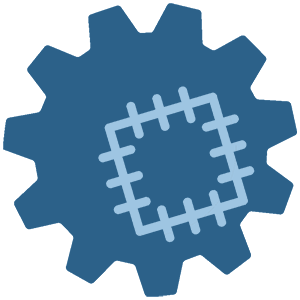

Focus on your mastery. We'll deliver your ambition.
Executing a high-stakes M&A integration or enterprise transformation requires an intense delivery focus and dedicated bandwidth that internal management teams, already running the day-to-day business, simply do not have the capacity to absorb.
We bridge this execution gap. We do not act as traditional management consultants who provide high-level advice from the sidelines. We embed directly into your business as a dedicated, senior-led delivery asset. Operating entirely outside of your internal structure and company politics, we provide the objective capacity needed to drive complex initiatives forward.
By leveraging our execution expertise, corporate boards, business owners, and investment partners gain the dedicated momentum required to safely de-risk change, protect ongoing operations, and ensure full value realisation.
Leverage our hands-on expertise to navigate the complex transaction lifecycle, giving your internal teams the freedom to focus on the core business while we handle the specialist integration capability.
Rely on us to cleanly untangle legacy infrastructure, manage TSAs, and establish viable, fully operational independent entities.
Partner with us to overhaul legacy workflows, eliminate systemic inefficiencies, and embed the scalable operating models required to sustain long-term business growth.

Lean on us during integration distress or operational friction to rapidly restore performance, mitigate transitional risk, and protect ongoing business continuity.
Seamless integration, data migration, and rationalisation of complex ERP, CRM, and infrastructure.
Harmonising fragmented workflows, eliminating operational bottlenecks, and documenting scalable best practices.
Design and delivery of training frameworks to upskill front-line teams and embed new operational capabilities.
Physical asset relocations, legacy site closures, and capacity upgrades with zero operational downtime.
Managing complex TUPE transfers, redundancy consultations, and driving cross-functional organisational alignment.
Harmonising corporate governance, financial reporting systems, procurement contracts, and shared service models.
Integrating sales pipelines, customer-facing systems, product portfolios, and branding transitions.
Consolidating vendor networks, harmonising procurement contracts, and optimising logistics to unlock immediate synergy savings.